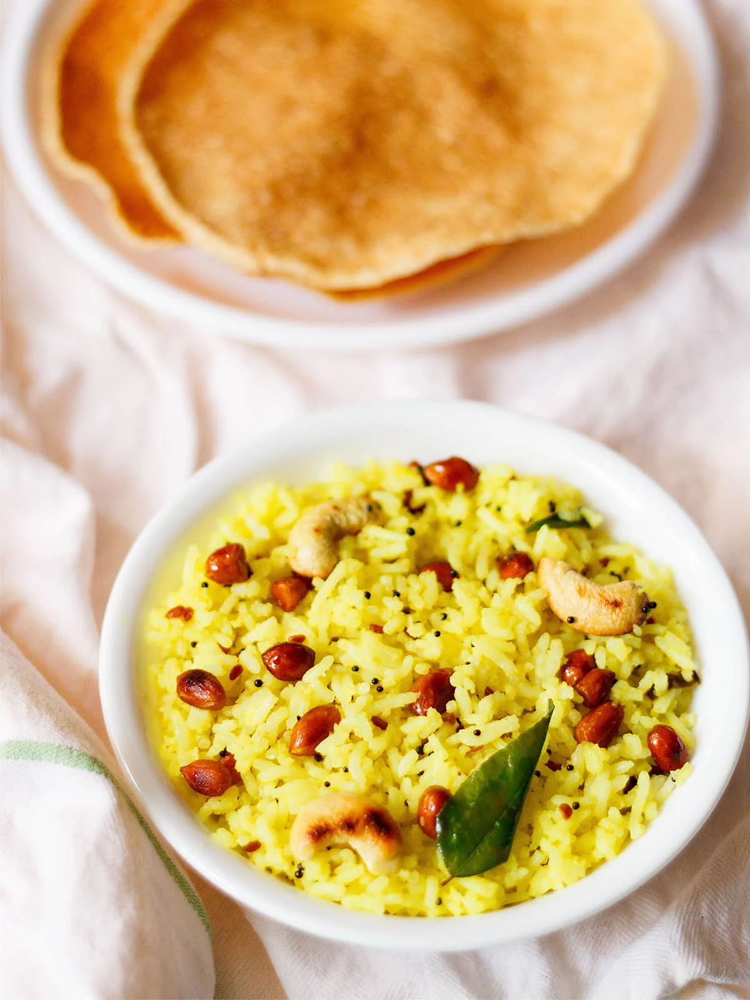
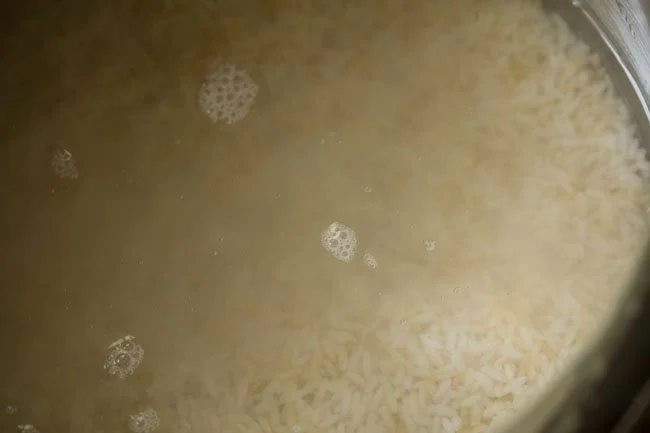
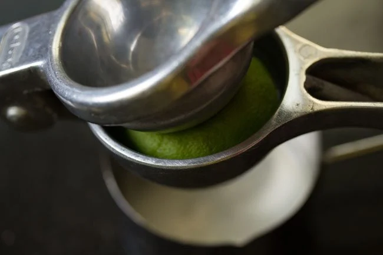
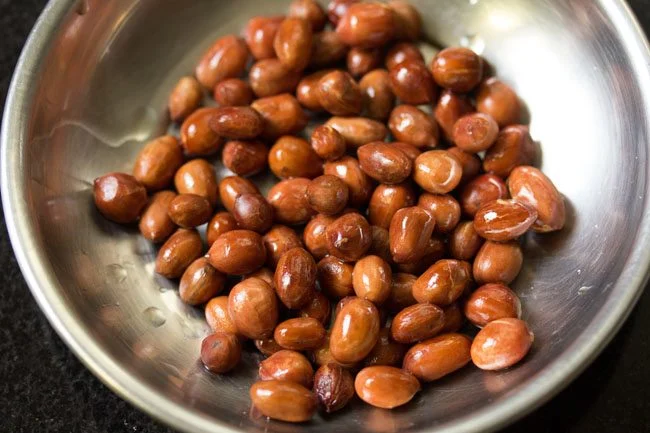
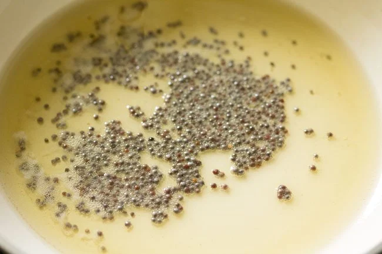
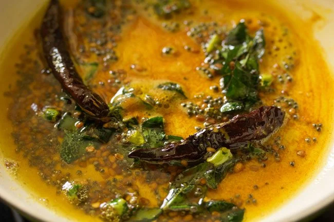
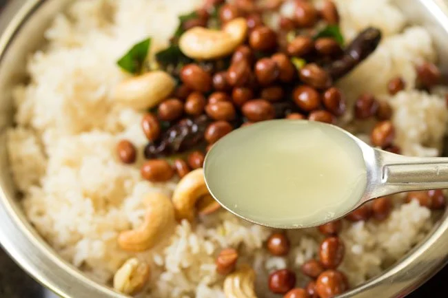

1. First rinse 1 cup heaped rice a couple of times and then soak in enough water for about 20 to 30 minutes. You can use short grained rice or a long grained rice like basmati. In my step-by-step photo guide, I have added short grained rice. In the video, basmati rice is used.
2. Then drain all the water from the soaked rice. Add rice in a 2-litre or 3-litre stovetop pressure cooker. Add ¼ teaspoon salt or add salt as required.
3. Add 1.75 to 2 cups water.

4. Pressure cook rice for 8 to 10 minutes or for 2 to 3 whistles on a
medium to medium-high heat. When the pressure settles down on its own in
the cooker, then only open the lid.
You can even cook rice in a pan or in the Instant Pot. Follow the steps as
listed below:
Pan method: Take rice, salt and 2 cups water in a pan. Cover and simmer
until all the water has been absorbed and rice grains are tender and
fluffy. Check when the rice is simmering and if the water has dried up
with rice grains undercooked, add some more hot water and continue to
cook.
Instant Pot method: Add rice, salt and 1 or 1.25 cups water (depending on
rice type and quality) in the steel insert of a 6 quart IP. Pressure cook
for 5 minutes on high. Do a quick pressure release after 5 minutes.
5. Empty the cooked rice in a bowl or plate and set aside so that it
becomes warm or cool at room temperature. You can also fluff the cooked
rice and let it cool in the cooker itself.
1 heaped cup of raw rice will yield 3 to 4 cups of cooked rice. However,
this can very depending on the type of rice.

6. Squeeze juice from 1 lime or 1 small lemon into a small bowl. You will
need about 1.5 to 2 tablespoons lime or lemon juice.
If you want a more tangy taste, then you can add more lemon juice. Set
aside.
7. Heat 2 tablespoons sesame oil in a pan. Add ¼ cup peanuts. The sesame
oil that is added is made from raw sesame seeds and is also known as
gingelly oil. It has a totally different flavor and aroma than the
south-asian toasted sesame oil.
If you do not have sesame oil, then add sunflower oil, canola oil, avocado
oil, peanut oil or grapeseed oil.
If you have roasted peanuts ready, then you can give a miss to this step.
I sometimes have extra roasted peanuts in the pantry to be had as a snack
or to be added in recipes like these.

8. Fry the peanuts on a low to medium heat until they become golden and crunchy.
9. Remove and set aside.
10. In the same pan add 1 tablespoon cashews.
11. Fry cashews until they turn golden. Set aside.
12. Now add 1 tablespoon sesame oil in the same pan. When the oil becomes hot, lower the heat and add 1 teaspoon mustard seeds.
13. When the mustard seeds begun to crackle, then add 1 teaspoon urad dal
(spilt and skinned black gram).
I don’t add chana dal (split and skinned bengal gram) to my lemon rice
recipe, but if you want to add these, soak the lentils in hot water for 20
to 30 minutes. Drain the water and then add them to the oil at this
step.
Make sure they are pat dried or the extra water or moisture in them will
make the oil splutter too much.
14. On a low heat, fry the urad dal till they turn golden.
15. Next add 12 to 15 curry leaves, 1 teaspoon chopped green chillies and 2 dry red chilies (preferably seeds removed).
16. Sauté for some seconds until the red chilies change color.

17. Switch off the heat and add ½ teaspoon turmeric powder and 1 generous pinch asafetida (hing).
18. Mix very well.
19. Now pour this tempering mixture in the cooked rice.
20. Add the fried peanuts and cashews.
21. Add lemon juice – about 1.5 to 2 tablespoons.
22. Add salt as required.

23. Mix very well.
24. Check the taste and add more lemon juice or salt if you like. Keep the
lemon rice or chitranna covered for the flavors to blend for 4 to 5
minutes.
While serving garnish with some chopped coriander leaves (cilantro) if you
prefer.

25. Serve lemon rice with papaddums or vadams and coconut chutney or just have it plain. You can even pack lemon rice in tiffin or for a travel journey.